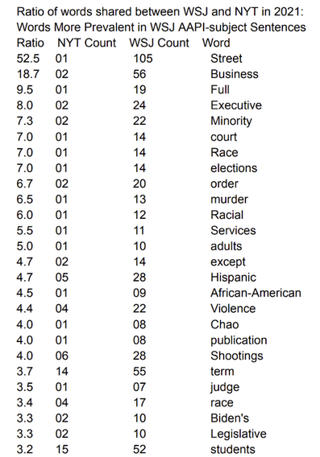

Asian American Pacific-Islanders in the News

Co-Authors: Shivani Chowdury, Sharon Jepkosgei, and Ryan Rynbrandt
Sampling Articles from the New York Times and the Wall Street Journal
A Text Analysis
If people only learned about AAPI through one news outlet, how would that shape what they think and believe about them?
How would that differ between conservative and liberal outlets?
Pre- and Post-Covid?
Asian Americans and Pacific Islanders (AAPI) are the fastest-growing ethnic group in the United States, accounting for 7% of the population and growing by 81% between 2000 and 2020 (U.S. Census Bureau, 2022). As with other ethnic minorities, AAPI have faced discrimination and stereotyping throughout American history. Most recently, the COVID-19 pandemic led to an increase in anti-Asian hate crimes in the United States, raising concerns about how AAPI are portrayed in the media. Since media outlets play a powerful role in shaping our views of the world around us, it is important to consider how different media outlets portray AAPI, and how this may influence what people think and believe about them.
Previous research has shown that the partisanship of news outlets can influence their coverage of a variety of topics, including race and ethnicity. For example, one study found that conservative news outlets were more likely to portray African Americans as criminals and liberal news outlets were more likely to portray them as victims of discrimination (Iyengar & Kinder, 1987).
AAPI are often stereotyped in the media as being hardworking, intelligent, and successful. Though such “model minority” stereotypes often highlight positive attributes and achievements, they can be harmful in a variety of ways. Being stereotyped as high-achievers results in the perception of AAPI as having fewer needs than other minority groups or being overlooked for opportunities and support. Additionally, it can lead to AAPI feeling pressure to live up to unrealistic expectations and to avoid seeking help when they need it. (Sue et al, 2007). After the pandemic, more clearly negative stereotypes began to arise. One study analyzed a sample of 1,157 news articles from five major US news outlets and found that AAPI were more likely to be portrayed as dirty, diseased, and dangerous in the media during the pandemic. The study also found that AAPI were more likely to be blamed for the pandemic and to be seen as a threat to public health (Jang et al, 2021).
Our study adds to the existing literature in two important ways. First, whereas previous research looked at the media as a monolithic entity, we seek to explain the influence of media outlets’ partisan leanings in their portrayals of AAPI. Second, we seek to explain the impact of the COVID pandemic in changes in media portrayals of AAPI.
Main research questions:
1. Does the partisanship of national news outlets influence how they portray AAPI?
2. Did this change after the COVID-19 pandemic?
3. To what extent do either liberal or conservative outlets perpetuate stereotypes surrounding AAPI?
First hypotheses: H01: News outlet partisanship has no influence on their portrayal of AAPI HA1: Conservative and liberal news outlets will portray AAPI differently Second hypotheses: H02: Portrayals of AAPI did not change from pre-pandemic to post-pandemic HA2: Portrayals of AAPI changed from pre-pandemic to post-pandemic
This research aims to investigate whether the partisanship of national news outlets influences their portrayal of Asian American Pacific Islanders (AAPI), and whether this portrayal changed after the COVID-19 pandemic. To achieve this, we employ data-driven text and sentiment analysis techniques using the R and Python programming languages. Our methodology involves the cleaning and parsing of text data collected from a liberal and a conservative news outlet. We intend to extract insights through Natural Language Processing (NLP) tools such as Latent Dirichlet Allocation (LDA), tidytext in R, and the nltk library in Python. This methodology allows us to uncover distinct patterns in language use and sentiment within news articles and investigate the evolution of these patterns over time.
Our data collection process involves the systematic retrieval of news articles published by one liberal and one conservative news outlet, both before and after the COVID-19 pandemic. We sample these articles to create a comprehensive corpus for analysis. Before proceeding with the analysis, we perform data preprocessing, which includes tasks such as removing stopwords, punctuation, and irrelevant formatting. We also tokenize and lemmatize the text to ensure uniformity and consistency in word representation. We employ Latent Dirichlet Allocation (LDA), a topic modeling technique, to identify hidden themes or topics within the news articles. LDA works by assuming that each document in our corpus is a mixture of topics, and each topic is a distribution of words. By applying LDA, we aim to uncover the underlying topics that dominate the discussions related to AAPI in both liberal and conservative news outlets. In R, we utilize the tidytext package to further dissect the text data. Tidytext enables us to organize the text into a structured format suitable for analysis. It facilitates the creation of word frequency tables, sentiment analysis, and sentiment visualization. In Python, we leverage the nltk library for similar text processing tasks.
One of our primary objectives is to identify words that are disproportionately found in the liberal versus conservative news articles discussing AAPI. To achieve this, we calculate word frequencies within each subject sentence and compare them between the two outlets. We consider words that exhibit significant differences in usage between the outlets as distinctive AAPI context words. These words and phrases serve as indicators of how AAPI issues are framed differently in liberal and conservative news. To assess whether the portrayal of AAPI changed after the COVID-19 pandemic, we compare the usage of distinctive AAPI context words in the pre-pandemic and post-pandemic periods. This analysis provides insights into how the narrative surrounding AAPI issues may have evolved during a critical period in recent history. In conclusion, our research methodology combines the power of NLP techniques, such as LDA, tidytext, and nltk, to dissect unstructured text data from liberal and conservative news outlets. Through this process, we aim to uncover and compare distinctive patterns in language use and sentiment regarding AAPI, shedding light on the potential influence of partisanship on news portrayal. Additionally, by examining changes before and after the pandemic, we intend to reveal shifts in the narrative, contributing to a more comprehensive understanding of media portrayal of AAPI issues.
Population framing and Sample Selection
To test our hypotheses, we collected a corpus of 381 articles about AAPIs from two major U.S. newspapers, the Wall Street Journal (WSJ) and New York Times (NYT) published in 2019 and in 2021 using the ProQuest and LexisNexis Academic databases. Both are globally influential major newspapers of record with massive readership and long-established reputations for excellence in reporting and first-hand coverage. Thus, we would expect less divergence in portrayals of AAPI in these sources than we would in a comparison of more extreme and opinionated sources or in a comparison of very different types of outlets. Initially, articles were converted into plain text format for ease of processing. Given the focus on AAPI-related content, we identified a specific set of keywords and phrases related to AAPI, such as ‘Asian American,’ ‘Pacific Islander,’ and ‘AAPI.’ This word set was instrumental in filtering the outlet-specific population of articles and selecting the sample.
Word Ratio Tables
This method involves comparing the frequency of specific words in articles from the New York Times (NYT) and the Wall Street Journal (WSJ), two outlets with differing editorial leanings. By calculating word ratios, this analysis aims to uncover potential biases and thematic differences in how these outlets portrayed AAPI communities, particularly across two key periods, 2019 and 2021. The core of this analysis lies in the calculation of word ratios. This involved comparing the frequency of each word in AAPI-related sentences across the two news outlets. The ratio was calculated as follows: for a given word, its frequency in the NYT articles was divided by its frequency in the WSJ articles (and vice versa), adjusted by adding 1 to the denominator to avoid division by zero. This method was applied separately for each outlet and each time period (2019 and 2021), enabling a comparative analysis across both dimensions.
Interpretation
Word ratio analysis determines the relative prevalence of certain words in NYT articles vs WSJ articles in a specific year relative to the percentage of AAPI-subject sentences to non-subject sentences. This descriptive analysis lends support to our first hypothesis regarding differences between conservative and liberal national news outlets. For example, in Table 3 below, the word “women,” has a ratio of 8.5, suggesting that it is 8.5 times more prevalent in NYT AAPI-subject sentences compared to those in WSJ. This shows that NYT covers more gender-centric issues related to AAPI in its news coverage than WSJ. Secondly, NYT also appears to have more references to specific geographic references (“South”, “Hawaii”, “Pacific”). Lastly, NYT has more mentions of political terms like “president,” “Congress,” and “political.”, as well as references to specific candidates (“Yang”) in the pre-pandemic period. Conversely, words like “Hawaii,” and “Chinese” are more evenly distributed between NYT and WSJ.
When it comes to the ratio of words shared between WSJ and NYT in the pre-pandemic period in in 2019, words like “Education,” “College,” “University”, “Company”, “networks”, “organization”, “school”, “diversity” are significantly more prevalent in WSJ compared to NYT, based on the given ratios in Table 2 above. This supports the perception that the Wall Street Journal ties AAPI subject matter and context to academic success. Thus, the model minority myth could be at play here. More rigorous techniques are required to make further definitive statements.

Interpretation
In post-pandemic 2021, COVID-specific terms like “percent,” “reported,” “February”, “2021” highlight the relevance of the context to the ongoing pandemic in NYT coverage of AAPIs (Table 3 above). Further, among the top words with very high ratios were words like “Identity”, “politics”, “Kamala”, “Harris”, “voters”, “immigrants”, suggesting a distinctive emphasis in NYT coverage, indicating a bigger focus on politics compared to WSJ. Immigration-related terms like “immigrants” and “voters” suggest a connection between AAPI subjects and discussion of immigration policies. The presence of terms like “incidents,” “activists,” and “attacked” suggests a focus on rising incidents or attacks against the AAPI community in the wake of Covid and activism in support of the AAPI community. It should be noted that some of the results contain database template words which clouded the results. Unfortunately, time did not permit us to rectify this in our scripts.
Next, when it comes to the ratio of words shared between WSJ and NYT in the post-pandemic period in 2021 (Table 4 above), words like “Street,” “Business,” “Executive,” “Minority,” “court,” “order,” “judge,” and “Legal” are among the top words with very high ratios, suggesting a distinctive emphasis in WSJ’s coverage of AAPI. These words suggest a strong business and legal focus in WSJ’s coverage of AAPI subjects. Further, terms like “Race,” “Racial”,“African-American,” and “Hispanic” perhaps indicate a comparative focus on the racial and social aspect in the WSJ coverage of AAPI in relation to other racial groups in the US, such as African-Americans and Hispanic. In addition, higher word ratios of words like “Education,” “People,” “students,” and “elite” suggest a focus on educational and cultural attributes of AAPI in WSJ, which provides more support for our third hypothesis regarding the perpetuation of ‘model minority’ stereotype about AAPI in conservative outlets. Lastly, terms like “Shootings,” “murder”, “Violence,” “Crimes,” and “Spa” suggest a focus on crime and violence against AAPI in the post-pandemic period in WSJ coverage which was also seen in NYT coverage in 2021.
Topic Modeling
Topic modeling is an unsupervised machine learning technique for finding and tracing clusters of words (called “topics” in shorthand) in large bodies of texts. There are several models that can be plugged into the topic modeling process. I chose Latent Dirichlet Allocation for its ability to better generalize and its popularity in the humanities fields than LSA or pLSA. Like other clustering techniques, it is up the scientist to determine the parameters and number of topics which can change the final results. I used elbow plots that mapped the coherence (AKA the perplexity) against the number of topics. I applied this method iteratively between the partisan outlets and their pre and post COVID years.
.png)
Here, we see the results for the NYT 2019 set of articles making mention of AAPI. Not all of the topics are very specific, or clear. The Presidential Campaign of Andrew Yang clearly led much of the discussion surrounding AAPI 2019. This could suggest some version of identity politics. A closer look at the sample or sampling years prior would be necessary to confirm this as a more consistent theme.
.png)
I thought the results for 2019 WSJ sample was the most illuminating. Nearly all the topics relate to academic achievement and admissions, except one which captured ProQuest template data. This is especially of interest in the wake of the Supreme Court’s decision to strike down college diversity and inclusion policies in a case brought before them by AAPI. This appears to superficially support our hypothesis that there is a difference in coverage based on partisanship/ideology, at least pre-covid. It also seems to support superficially that stereotypes could be at play. A more nuanced and technically rigorous look at the data is necessary to conclude this.
.png)
.png)
Interpretation
Topic Modeling analysis provides additional support for our first hypothesis on the differences between liberal and conservative outlets, though the differences are once again more pronounced pre-pandemic. Again, in 2019 education-related words (“students”, “admissions”, “college”, etc.) dominated two of the four WSJ topics and zero of the four NYT topics. That year, only one of the four WSJ topics was dominated by politics-related words (“democratic”, “political”, “candidates”, etc.), while three of the four NYT articles were. This difference persisted in 2021, when one of the five WSJ topics was dominated by education-related words and none of the NYT were. Yet differences in 2021 were again less stark, as both outlets shifted some focus to attacks on AAPI and both had some focus on political issues and figures. Both outlets began covering AAPI related hate crimes and violence which superseded their previous coverage of identity politics and college admissions, respectively. Both outlets seem to maintain some level of pre-covid topics, albeit at a lower frequency. Thus, we cannot say the convergence is support for the null hypothesis. It should be noted that had we chosen outlets considered to be more ideologically polarized, we likely would see larger partisan differences bear out both in the pre and post covid years. This evidence supports our hypothesis that covid changed the nature of news coverage in relation to AAPI. However, since topic modeling removes much of the nuance and context, further analysis is necessary to determine if a significant partisan difference is detectable.